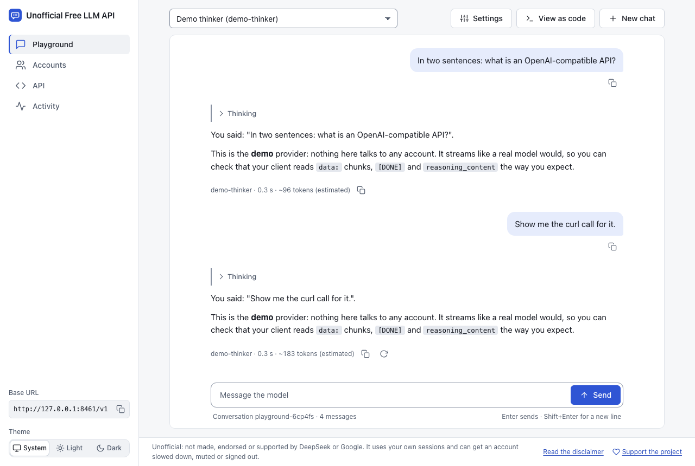
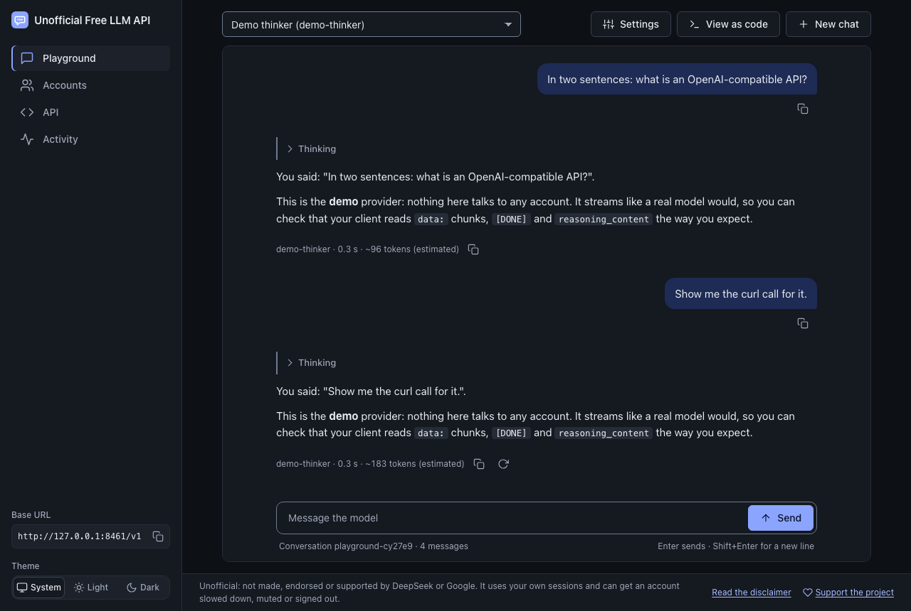
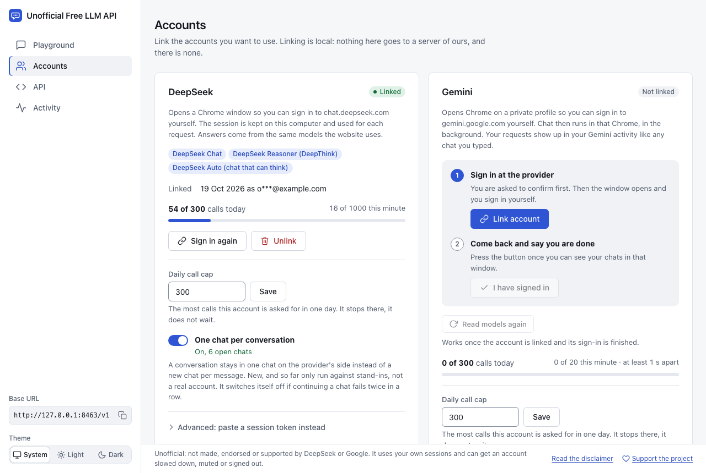
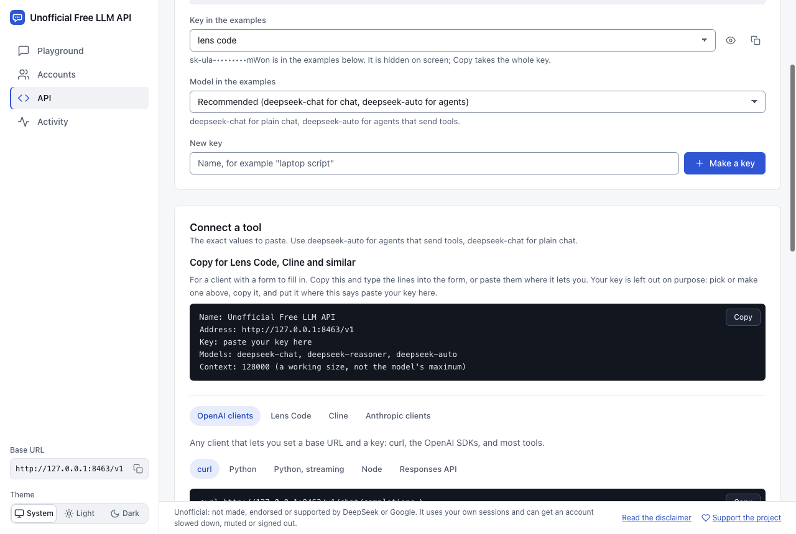

Alpha · open source · MIT
Unofficial Free LLM API
A local, OpenAI-compatible API and web playground for the personal DeepSeek, Gemini or Qwen chat account you already have.
Start it in a terminal
npx unofficial-free-llm-api@latest
You need Node.js 22 or newer, and Google Chrome (for linking an account; Qwen also answers through it, so its window stays open while the program runs). @latest stops your computer from running an older copy it kept.
How it works
-
Start it
Run the command above. It prints a link and opens it: that is the web interface. It also prints your first API key.
-
Sign in yourself
In the web interface, choose Accounts, then Link account. Tick the box, sign in to the provider in the Chrome window that opens, then press “I have signed in”. The program never sees your password.
-
Point your tool at it
Use
http://localhost:8420/v1as the base URL and paste in your API key. The API page shows both, ready to copy.
No account yet? Add the flags --demo --providers demo to the command. A demo provider answers by describing what it was sent, so you can try the interface and your own tool first.
What you get Alpha
-
OpenAI-style chat
POST /v1/chat/completionswith streaming, tool calls and JSON mode, andreasoning_contentwhen the model thinks first. -
Two more APIs
OpenAI’s Responses API at
/v1/responsesand Anthropic’s Messages API at/v1/messages, for clients that speak those. -
A models list
GET /v1/modelslists the models of the accounts that are linked right now, each with a workingcontext_length. Gemini’s and Qwen’s lists follow your account:geminiandgemini-autoare always there, and Qwen lists the ids your account offers. -
One chat per conversation
A conversation stays in one provider chat, the way a person’s does, instead of opening a new chat for every message. If a chat cannot be continued, it is given up and the request is asked again in a new chat.
-
A playground
A web interface served by the same program. Talk to a model with streaming, link and unlink accounts, see your usage, limits and cooldowns, make API keys and copy ready-made snippets.
-
doctor and selftest
doctorchecks Node, Chrome, the data folder’s permissions, the port and your accounts, and says what to fix.selftest --yessends a short conversation through a running server and tells you whether it stayed in one provider chat. It spends one request per turn and prints sizes and times, never words.


Status: Alpha. What has been run, honestly
- The program has automated tests that run against stand-ins: a scripted provider, a local copy of DeepSeek’s endpoints and a local page shaped like Gemini’s. Qwen has no stand-in yet, so its lane has been checked live only.
- Run by the author on their own real accounts: on 2026-10-22, linking DeepSeek and Gemini, chatting, a three-message DeepSeek conversation that stayed in one DeepSeek chat, a Gemini conversation that stayed in one Gemini chat, switching models, and the model list read from a real Gemini picker. DeepSeek answered in 3 to 8 seconds. Gemini worked but was slow and uneven, and sometimes answered with its own error message. On 2026-10-23, linking Qwen and using Qwen3.7-Plus: a new chat (about 24 seconds for the first answer), a follow-up that stayed in the same chat (about 5 seconds), a cancelled request (no retry, the draft was put back), and a recovery that opened a replacement chat. Qwen3.8-Max answered with its own daily-limit message, which the program returned as text and did not retry.
- Not yet run against a real account: an agent sending tools (including on Qwen), long conversations, a day of steady use,
selftest --yes, the Anthropic and Responses APIs with their own clients. One chat per conversation is built to fail safe: if a provider does not accept it, the chat is given up, and two failures in a row switch the feature off. - Qwen can ask for a browser check. When it does, the request fails with
403 qwen_verification_required, requests pause for 20 minutes, and you complete the check in Qwen’s own window. The program does not pass it for you or retry around it. - Not supported: images in, embeddings, and more than one answer per request. Settings a web chat has no control for, like
temperature, are ignored and named in anX-ULA-Ignoredresponse header. Token counts are estimates. - If you try it on a real account, an issue saying what you saw is the most useful contribution there is.
Privacy and safety
-
It runs only on your computer
By default the server listens on
127.0.0.1, so it is for this computer only, and other hosts are refused. There is no cloud and no account with us. -
You sign in yourself
Linking never sees your password. You sign in to the provider in a Chrome window, and the program keeps the session that results.
-
Your logins stay in a folder on your machine
The folder is set up so that only you can read it. Anyone who gets it can use your account, so treat it like a browser profile.
-
API keys
By default every request to
/v1needs a key. Make, show and revoke keys on the API page or withunofficial-free-llm-api key. -
Nothing goes anywhere except to the provider
Only the requests to the provider leave your computer. Logs and the Activity page keep names, sizes and times: never a prompt, an answer, a token or a cookie. The one other call the program can make is
doctor --online, which asks npm for the newest version, and only when you ask. -
It paces and caps itself
DeepSeek: one request at a time, at least 4 seconds apart, at most 10 a minute. Gemini: 1 second apart, 20 a minute. Qwen: at least 10 seconds apart, 6 a minute. A daily cap of 300 calls per account by default (Qwen: 100). The first refusal from a provider, such as a rate limit, a mute or a human check, stops all calls until a cooldown ends; Qwen’s browser check pauses requests for 20 minutes, and the check is yours to complete. This lowers the risk. It does not remove it.
-
This site has no tracking
No analytics, no cookies, no fonts or scripts from other sites. It makes no request to any other address. The only thing it remembers is your light or dark choice, in your own browser.
-
What it does not protect
Another person on the same computer can reach the local port, and can use the API if they have a key, so do not run it on a shared machine. A model’s text can become tool calls in your client, so keep approval on for tools that can do harm. The provider sees what you send, as it would from a browser. More in the security notes.

Use it from tools
It works with OpenAI-compatible tools: anything that lets you set a base URL and an API key. Use http://localhost:8420/v1 and a key from the API page. The model ids are the ones GET /v1/models lists for the accounts you linked.
curl http://localhost:8420/v1/chat/completions \
-H "Authorization: Bearer sk-ula-..." \
-H "Content-Type: application/json" \
-d '{
"model": "deepseek-chat",
"messages": [{"role": "user", "content": "Say hello in five words."}]
}'from openai import OpenAI
client = OpenAI(base_url="http://localhost:8420/v1", api_key="sk-ula-...")
reply = client.chat.completions.create(
model="deepseek-chat",
messages=[{"role": "user", "content": "Say hello in five words."}],
)
print(reply.choices[0].message.content)Add "stream": true to get the answer as it is written. The full reference is in docs/api.md, and there are more examples (curl, Python, Node, streaming, tool calling) in examples/.

Questions
Is it free?
“Free” means the free personal chat accounts you already have. This adds no capacity: you get what your own account gets. The software itself is open source under the MIT licence.
Is my account safe?
There is no guarantee. Providers can slow an account down, ask for human checks, sign it out or mute it. A DeepSeek account has been muted for days after bursts of messages sent this way. Qwen can ask for a browser check, which the program leaves for you to complete. The program paces and caps itself and stops at the first refusal, which lowers the risk and cannot remove it.
Use an account you can afford to lose, and not one you earn from or depend on. Read the DISCLAIMER first.
Why does it open Chrome?
To link an account. It opens an ordinary Chrome window on a private profile folder inside the program’s data folder, never your everyday profile, and you sign in there yourself. That is how the program never sees your password.
After that, DeepSeek is answered without a window. Gemini is answered through Chrome running in the background, which uses hundreds of MB while it works and closes after ten idle minutes. Qwen is answered through its own Chrome window, which stays open while the program runs because requests go through the page.
Can I put it on a server?
No, not as a service for other people. The logins and the Chrome profile live in a folder on your own computer, and that is part of the security design: anyone who gets that folder can use your account.
The DISCLAIMER also says it is not for sharing access to your account or running a service on it. Running it on your own machine with no desktop is described in the providers notes, and is untested.
Which systems does it run on?
It needs Node.js 22 or newer, and Google Chrome to link an account (Chromium and Edge are tried when Chrome is missing). The documentation does not list operating systems. Run unofficial-free-llm-api doctor: it checks Node, Chrome, the data folder, the port and your accounts, and says what to fix.
What if it stops working?
Providers change their sites without notice, and when they do, that provider breaks here until someone fixes it. Run doctor to check your setup. A blank DeepSeek page that keeps redirecting is usually Chrome refusing to save site data for it; the README explains the fix. If that does not explain it, open an issue with the log lines from ULA_DEBUG=1. They carry names and sizes, never prompts or tokens. Do not paste tokens, cookies, emails or your data folder.